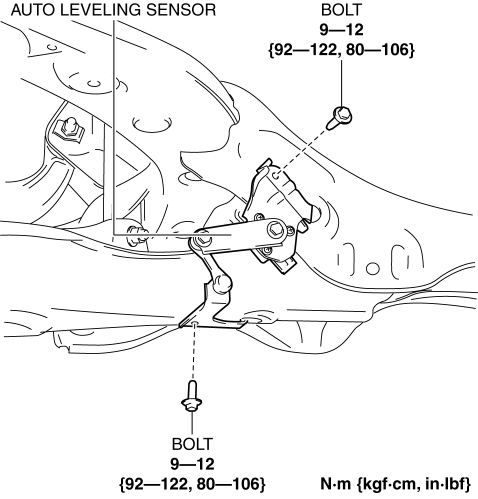

< Previous
Next >
2014 -
Mazda6 -
Body and Accessories
AUTO LEVELING SENSOR REMOVAL/INSTALLATION
1. Disconnect the negative battery cable. (See NEGATIVE BATTERY CABLE DISCONNECTION/CONNECTION [SKYACTIV-G 2.5].)
2. While pressing the clip tabs in the direction of arrows (1) shown in the figure, press the clip in the direction of arrow (2) to detach the clip tabs from the auto leveling sensor.
3. Remove the clip.
4. Disconnect the connector.
5. Remove the bolts.

6. Pull out the hooks from the rear crossmember in the positions shown in the figure.
7. Remove the auto leveling sensor.
8. Install in the reverse order of removal.
9. Perform the headlight auto leveling system initialization. (See HEADLIGHT AUTO LEVELING SYSTEM INITIALIZATION.)
< Previous
Next >
© 2012 Mazda North American Operations, U.S.A.